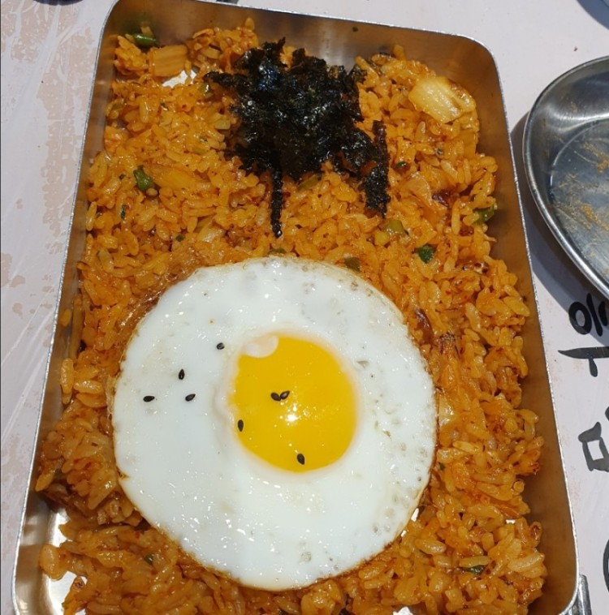

- 갈비찜
- 떡볶이
- 김치볶음밥(현재페이지)
김치볶음밥 만들기

1)kimchi fried rice
1. Heat oil in a frying pan and fry green onions and bacon.
2. When the green onion and bacon are cooked, fry the kimchi together.
3. Stir-fry the rice with all the fried ingredients.
4. Eat fried kimchi fried rice. 귀찮